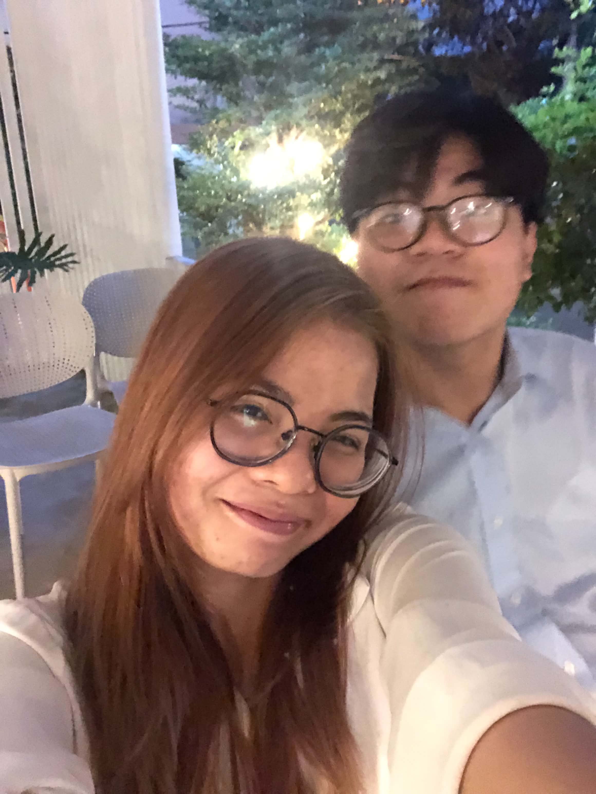
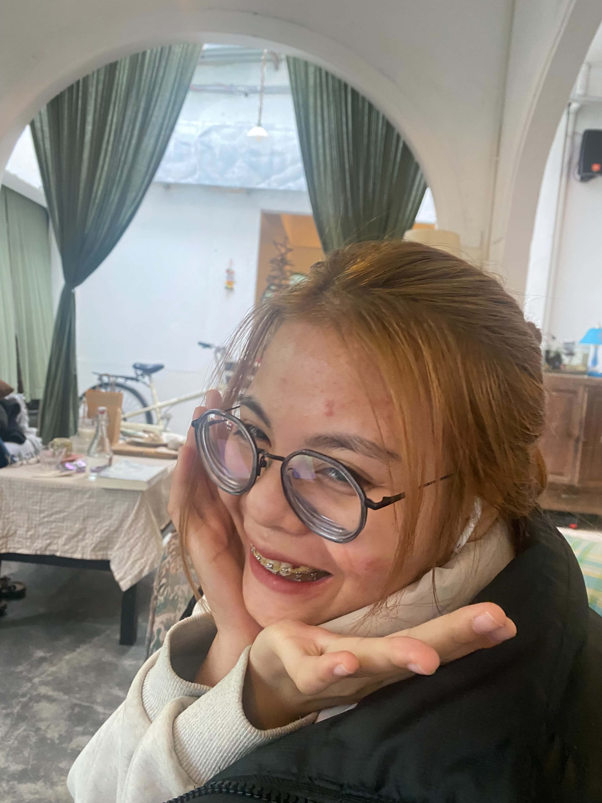
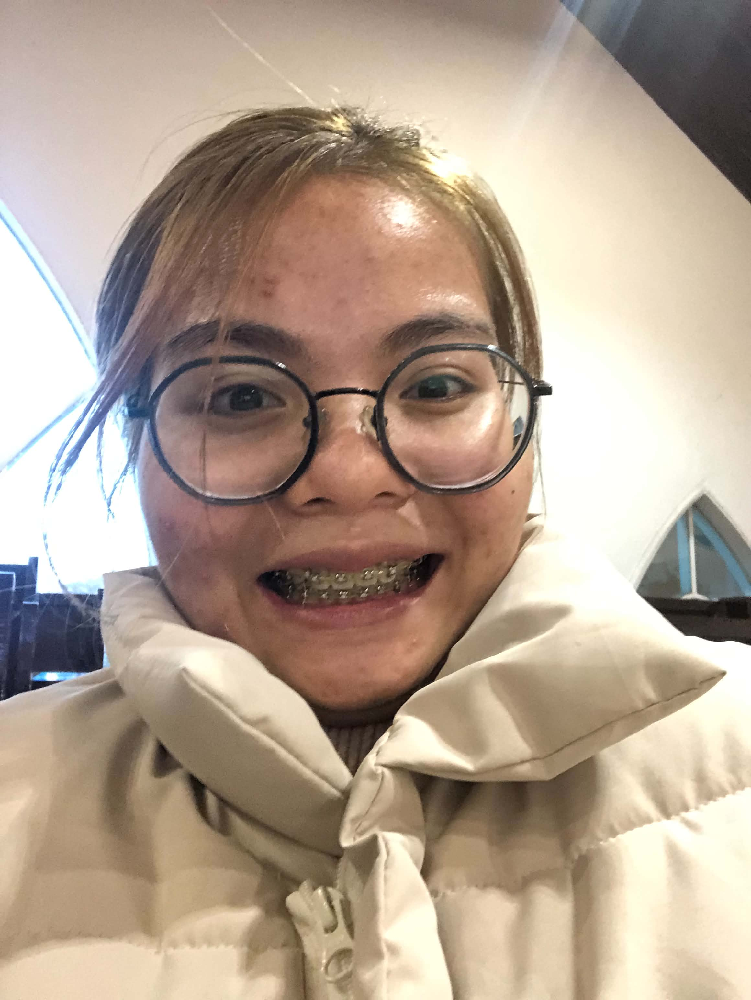
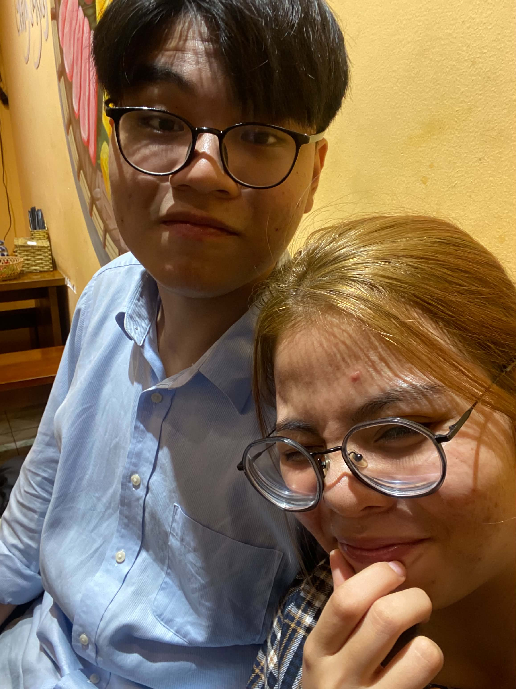
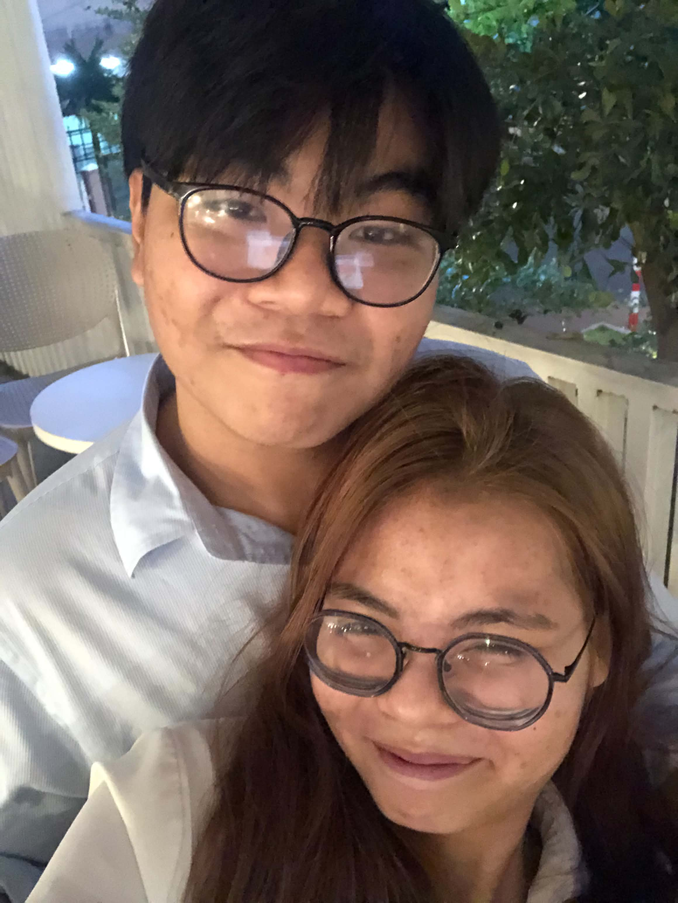
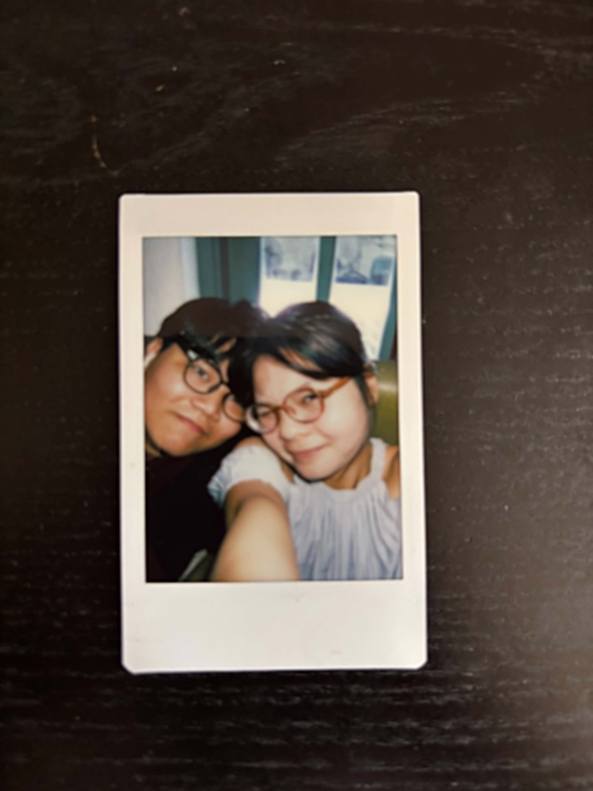

(anh có thể sửa mấy caption ni trong index.html nghe)
Hi suzy, nếu như mà em đọc được tin nhắn này thì chắc lúc đó mình đã quen lại nhau, hoặc là đã mất nhau mãi mãi I dont know,
anh phải thừa nhận 1 điều rằng là hồi quen KA anh không có logic như ri, lúc đó anh nhẹ nhàng hơn, anh cảm xúc hơn nhiều, sentimental, which i dont like, nhưng tới lúc quen em, anh không hiểu vì sao anh lại trở nên cứng nhất và lí trí như ri hết,
đáng lẽ anh nên trả lời những lời những cuộc trò chuyện của em, những câu chuyện mà em kể mà anh cho là vớ vẩn, đáng lẽ anh nên hợp tác hơn, anh không hiểu tại sao anh cứ luôn cho rằng là những câu chuyện em kể là vớ vẩn, lẽ ra anh nên trân trọng hơn những điều đó,
nhưng em biết không miệng anh thì nói là vớ vẩn nhưng tai của anh lúc nào cũng lắng nghe theo những điều đó hết, anh ghét cái hình tượng lạnh lùng ni, nhưng mà anh không biết nữa anh nghĩ là anh phải sống với hắn,
anh muốn nói là anh enjoy những câu chuyện mà em kể cho anh nghe nhiều lắm, anh thích nhất là lúc xu xu về và nói với anh là anh phải nghe chuyện ni, và rằng là anh phải bật cam lên để tập trung nghe em nói, anh thích lắm, nhưng mà không hiểu sao anh vẫn cứ nói là vớ vẩn,
anh xin lỗi nhiều lắm xu xu ơi, em là điều hạnh phúc nhất từng xuất hiện trong cuộc đời anh. Anh không muốn nói quá nhưng đây thật sự là như rứa, anh ghét cái lí trí ni và anh ước gì là mình đã nhẹ nhàng hơn với em, anh ước gì anh hiểu cho cảm xúc của em nhiều hơn, anh ghét anh quá, nhưng chuyện đã lỡ, giờ em đã hết yêu anh.
Anh mong là anh sẽ làm được điều gì đó để em yêu anh lại, anh muốn về vn với em lắm, hôm qua tới giờ anh cứ xem vé máy bay, nhưng anh chẳng còn đủ tiền sống tới tháng sau thì anh chẳng biết làm sao anh bay về làm bắt ngờ cho em nữa, anh xin lỗi em nhiều lắm.
Mong em tha lỗi cho anh, và chấp nhận yêu anh lại từ đầu.
Anh yêu em nhiều lắm, ước gì anh có thể bay về việt nam thay vì ngồi ở đây nói nhăng nói cuội, coi như đây là bài học dành cho anh.
— Thiên